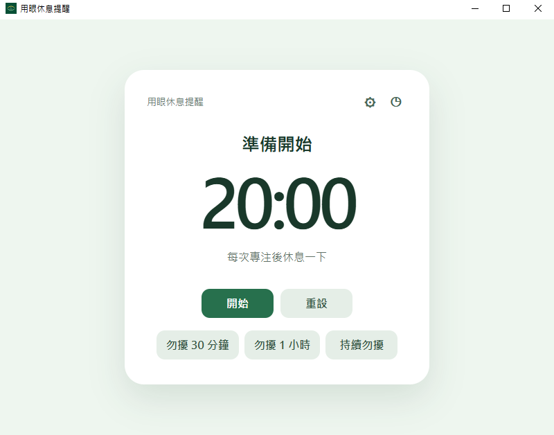

20 · 20 · 20
讓眼睛，好好休息。
一個輕量的 20-20-20 桌面提醒工具。
在專注工作時，提醒你適時把視線移向遠方。
正在準備最新版本下載連結…

Just 20 · 20 · 20
遵循 20-20-20 原則
剛剛好，就夠了。
不多不少的實用功能
- 常駐系統匣
- 休息期間置頂提醒
- 輕量、無帳號、無廣告
20 · 20 · 20
一個輕量的 20-20-20 桌面提醒工具。
在專注工作時，提醒你適時把視線移向遠方。
正在準備最新版本下載連結…

Just 20 · 20 · 20
剛剛好，就夠了。